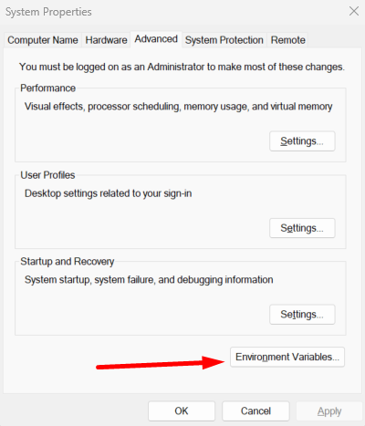
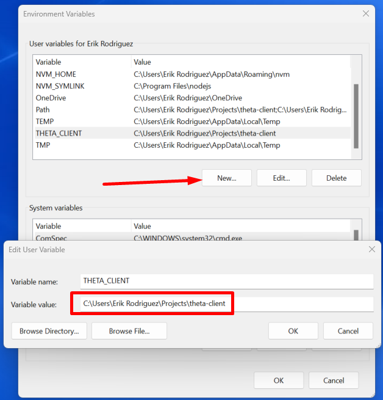
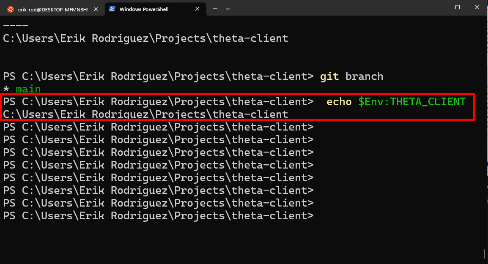
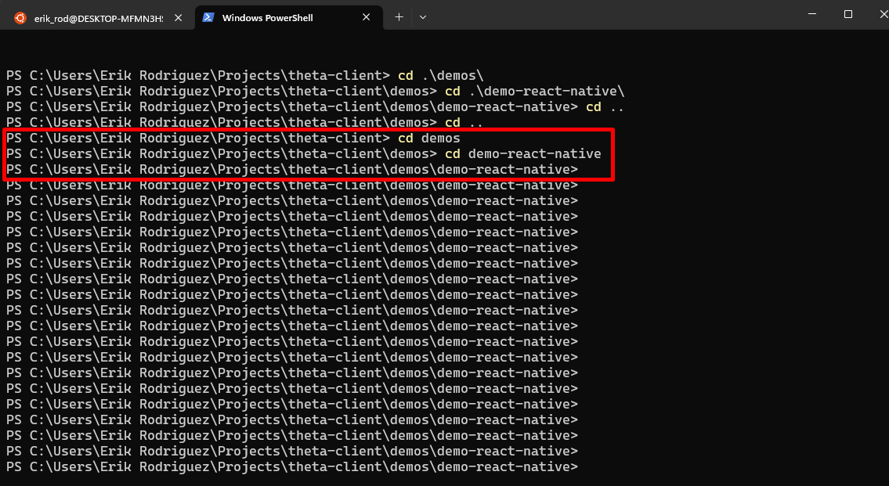
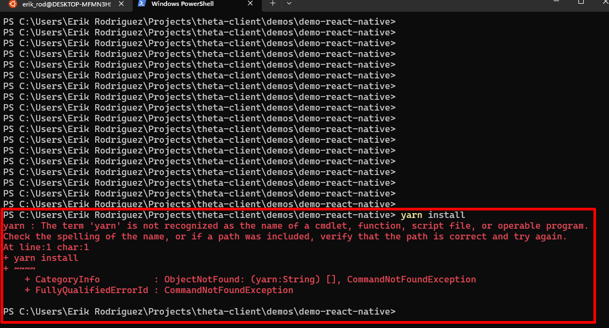
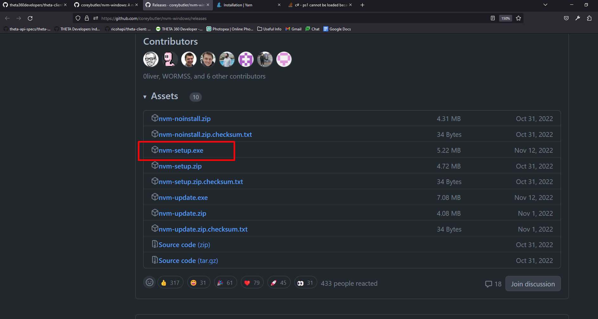
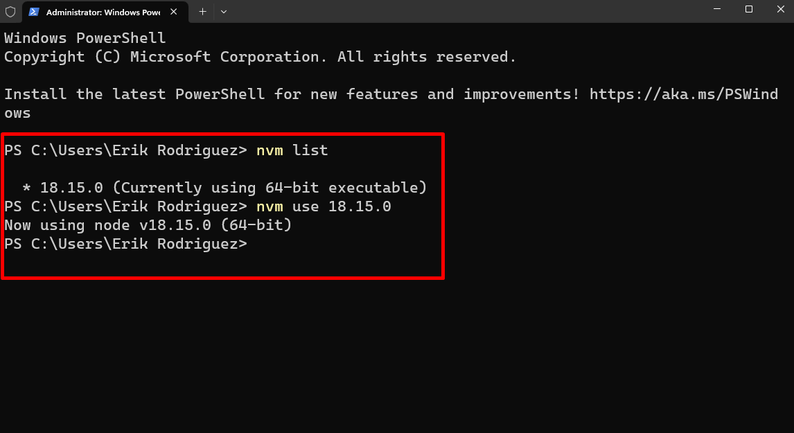
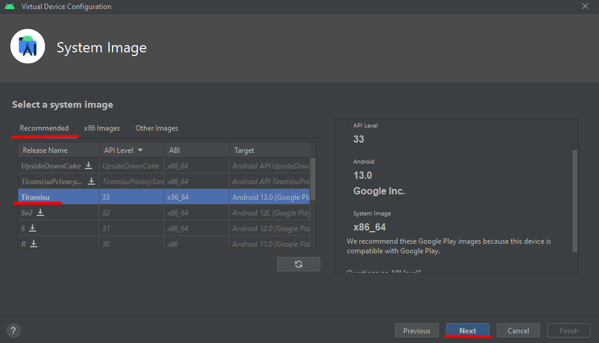

React Native RICOH THETA Demo Installation Guide for Windows

Overview
This section covers the installation process for React Native on Windows 11 so that we can run the demo-react-native.
Another section will cover the installation for macOS.
For this installation you will need to install Node.js if you haven't already.
There will be videos and links in the resource section for the installation of node.js on your computer. This article also covers how to build the theta-client and make it available to demo-react-native, as well as building the demo-react-native and running it on an Android emulator.
The results will be shown using the THETA X running the demo-react-native using the THETA API.
General Steps to run React Native Demo on Windows
- Build the
theta-clientand make it available todemo-react-native - Build
demo-react-native - Test the
demo-react-nativebuild on THETA X with an emulator - Test all demo features: List Files, Take Photo
Resources
Work Environment
| Dell XPS 13 | Details |
|---|---|
| CPU | Intel(R) Core(TM) i7-10710U CPU @ 1.10GHz 1.61 GHz |
| RAM | 16.0 GB |
| OS | Windows 11 Home |
- THETA X running firmware 1.41.0
Requirements
-
Needed for the SDK and Emulator Setup
-
Recommend to Install with NVM for Windows. Process is shown below in Node JS Section.
Command Line Steps
First Command - Clone the Repo
with git clone https://github.com/ricohapi/theta-client.git

Second Command - Go into theta-client directory
with cd theta-client

Third Command - Build Gradlew
with ./gradlew publishToMavenLocal podPublishXCFramework but I have an Error, the problem is the SDK location is not found. My solution is to set the environment variable of the SDK.

Steps to Fix for Build Failure
-
Search for env

-
Click on environmental variables

-
New User Variable and Type in the Variable name
ANDROID_HOMEand set the pathC:\Users\UserName\AppData\Local\Android\Sdk
By default the path to the SDK usually is
C:\Users\UserName\AppData\Local\Android\Sdk, Copy the Path substituting for yourUserName
-
Restart your terminal by closing and relaunching it before trying out the
gradlewbuild command again
Command Line Steps Continued
Retry Third Command - Try the Build Gradlew command again ./gradlew publishToMavenLocal podPublishXCFramework

Screenshot below shows its successful

Fourth Command - Set the environment variable of THETA_CLIENT
with the process shown above using the Windows Environment Variable Editor.
Variable Name : THETA_CLIENT
Variable Path : C:\Users\Erik Rodriguez\Projects\theta-client
Substitute the variable path for your local path to theta-client

Check if it sucessfully set the variable with echo $Env:THETA_CLIENT it should return the path of the THETA_CLIENT variable if set correctly

Fifth Command - Go into react-native directory
with cd react-native

Sixth Command - run bash ./mkpackage.sh
and as it appears we have errors to fix

To fix the mkpackage error:
You need to Convert your file to Unix format. This is one way to do it and there may be other ways.
-
Open up the VSCode editor, install it if you don't have it
-
Open the file called
mkpackage.shin thetheta-client\react-nativedirectory -
Convert the
mkpackage.shfileCRLFtoLFby clicking on the bottom rightCRLFbutton and changing it toLFas shown
-
Save the file by pressing
ctrl-sand you should be good to go!
Retry Sixth Command - run bash ./mkpackage.sh

Go into the demo-react-native folder as shown below from the root directory theta-client
cd demos
cd demo-react-native

Once you are in theta-client\demos\demo-react-native follow the next step
Seventh command - run yarn install
if you dont have yarn downloaded on your computer already then you need to get it by running npm install --global yarn
Note 1: May need to run Powershell in administrator mode if command isn't working
Note 2: May need to Install Node.js if your npm command isn't working which is shown in the Node.js section



Time to Run the Demo on Android
Now that we've sucesfully installed the required tools and setup. In the directory of theta-client\demos\demo-react-native use the command yarn run android to start your app in an Android emulator. Process shown in this Android Emulator Section to setup this emulator before running this command.


How to Install Node.js on Windows
-
Download the nvm-setup.exe in the link below

-
Run the nvm-setup.exe by clicking on it and follow the on screen setup instructions
-
Check if you installed NVM sucessfully by using the command
nvm --version
-
To install Node.js with nvm you can now run
nvm install ltsto install the long term support version of node
-
Check which versions of node you have then use it as shown with
nvm listand thennvm usemake sure you are in administrator mode
-
Check if node is working by running
node --version
How To Setup the Android Emulator
-
Open up Android Studio
-
Click on Tools then Device Manager

-
In the Virtual tab press on Create Device

-
Select the device and image, the one that works for me is the
pixel 4with google play store capabilities and thetiramisuimage, you may need to press on the download icon for theimage

-
Once you are on the last screen press
finishand let android studio setup your emulator, then you are done!